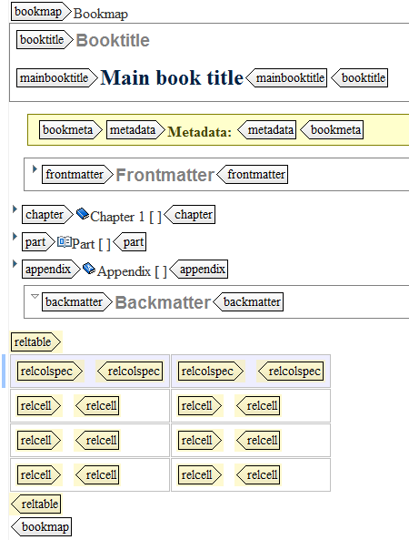

Bookmaps contain components which are similar to the parts of a traditional book. The topic references therefore are labeled according to the book components they represent. A bookmap can contain:
Component
Purpose
Booktitle
Contains the title information for a book, including the library title, main title, subtitle, and other titles.
Attention: A bookmap should contain no content, but also no direct topic references. Instead, bookmaps should contain only DITA map references which, in turn, can contain topic references. These DITA maps are then the chapters or parts of your book.
Example
The image below lists the possible components of a DITA bookmap:
